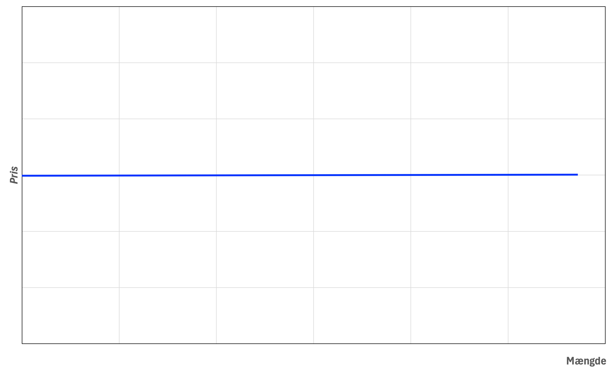
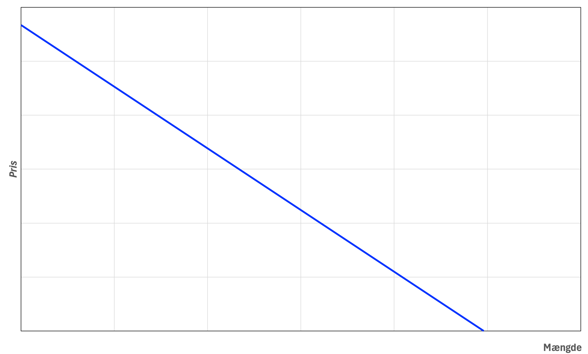
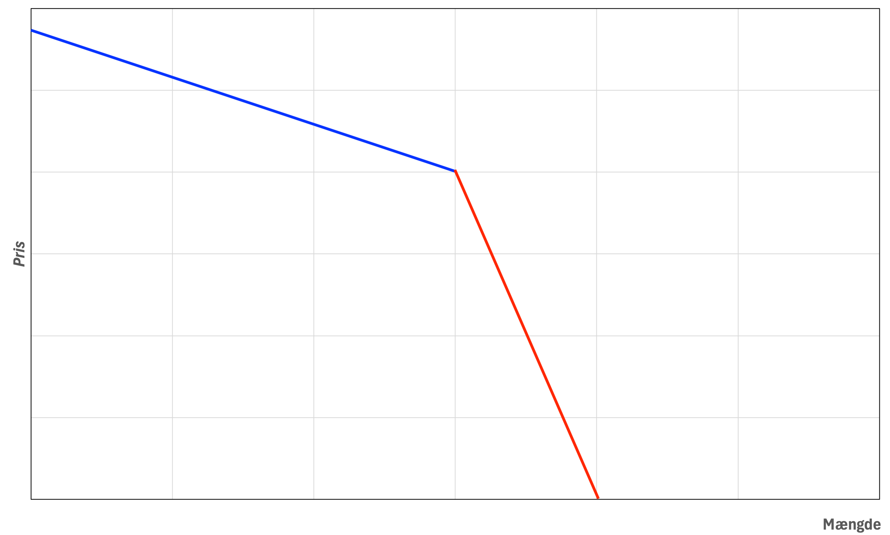
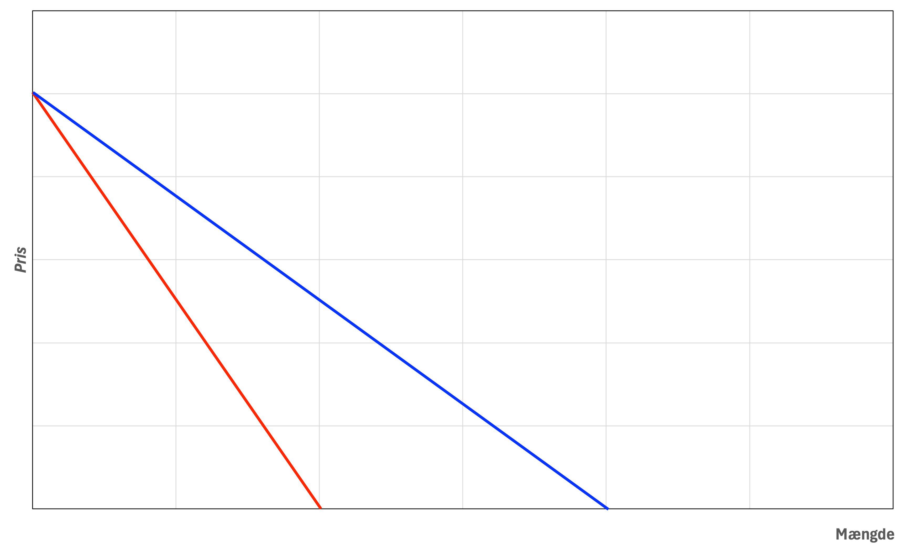

-

Temaprojekt-delen
Formål:
LØSNINGSFORSLAG
Formålet med temaprojektet er at give dig kompetence i at bruge, hvad ud har lært i denne uge, i praksis.
Beskrivelse:
I skal læse introen til temaprojektet herunder, før I går i gang med opgaverne.
OLA 2 Intro -
EDC Living Dragør
Vi ser stadig på virksomheden EDC Living i Dragør.
Afsender:
I forbindelse med Malene og Sam's overvejelser om udvidelse af forretningen, har de nogle overvejelser omkring den generelle markedssituation
Malene og Sam ønsker svar på følgende spørgsmål.
Et team af eksterne rådgivere, I er eksperter indenfor økonomi.
Modtager:
Direktionen i EDC Living, dvs. Malene Harrild og Sam Crabtree.
Man må ikke kontakte virksomheden, i forbindelse med dette projekt.
Mikroøkonomi - online-bogen -
Opgave 1
Markedsform
EDC Living har samarbejdspartnere konkurrenter og leverandører, man er interesseret i en kort og præcis vurdering af hvorledes markedsformen er hos disse aktører.
Vurder kort hvilke markedsformer der eksisterer på følgende markeder:
-
Realkreditsektoren i Danmark
Oligopol - Få store udbydere med relativt homogene produkter, høje adgangsbarrierer. -
Bankbranchen i Danmark
Oligopol - Få store aktører, der tilbyder differentierede produkter og services. Der er høje adgangsbarrierer (kapital, regulering). -
Forsikringsbranchen i Danmark
Oligopol - Få store selskaber, der tilbyder differentierede forsikringsprodukter. Der er adgangsbarrierer i form af kapital og regulering. -
Revisionsbranchen i Danmark
Oligopol (Big Four dominerer, men mange mindre aktører findes også) - Få store aktører, der tilbyder differentierede og specialiserede revisionsydelser. Der er adgangsbarrierer i form af certificeringer, omdømme og netværk. -
Lokalaviser i Dragør, hvor der kun findes avisen: Dragør Nyt
Monopol - Kun én udbyder af lokalaviser i området, hvilket giver Dragør Nyt fuld markedsmagt på dette specifikke marked. -
Skilte- og klistermærkebranchen i Region Hovedstaden, der leverer Til Salg skilte,
vinduesfolie
og andet
markedsføringsmateriale til ejendomsmæglerbranchen
Monopolistisk konkurrence - Mange udbydere, men de differentierer deres produkter/services (design, kvalitet, leveringstid, service). Relativt lave adgangsbarrierer.
-
Realkreditsektoren i Danmark
-
Opgave 2
Markedsform
EDC Living ønsker korte, præcise svar, gerne i punktform, på følgende spørgsmål:
- Hvilken markedsform opererer EDC Living Dragør under i Dragør, og hvordan påvirker
det deres prissætning af ydelser?
EDC Living Dragør opererer sandsynligvis under et oligopol i Dragør (man kan også argumentere for markedsformen er monopolistik konkurrence). Selvom der er flere ejendomsmæglere, er markedet domineret af en lille gruppe større aktører (f.eks. EDC Living, Nybolig Kastrup og EDC Bøgvald, som vist på Boligsiden.dk). Disse få, større mæglere har indflydelse på markedet, men konkurrerer stadig med hinanden gennem differentiering i brand, service, lokalkendskab og omdømme. Dette giver dem en vis markedsmagt, hvor deres prissætning er indbyrdes afhængig, men adgangsbarriererne er ikke så høje som i et klassisk oligopol, hvilket betyder, at nye aktører potentielt kan træde ind på markedet, men har svært ved at opnå en stor markedsandel. -
Hvilke adgangsbarrierer eksisterer der for nye aktører i ejendomsmæglermarkedet i
Dragør?
Herunder certificering/uddannelse
Adgangsbarrierer inkluderer:- Høje etableringsomkostninger (lokaler, IT-systemer, markedsføring).
- Lovkrav og certificering (f.eks. krav om at være uddannet ejendomsmægler).
- Behov for et stærkt omdømme og netværk i lokalområdet.
- Etablerede kunders loyalitet.
- Adgang til finansiering for opstart og drift.
-
Vurdér graden af konkurrenceintensitet i ejendomsmæglermarkedet i Dragør ud fra:
- Koncentration af virksomheder
Markedet er sandsynligvis moderat koncentreret med et par dominerende mæglere og nogle mindre, hvilket indikerer en moderat til høj konkurrenceintensitet. - Tilgangsrate af nye virksomheder
Lav til moderat tilgangsrate pga. eksisterende adgangsbarrierer, hvilket generelt mindsker den konkurrencemæssige trussel fra nye aktører. - Bevægelse af markedsandele
Hvis markedsandelene skifter ofte mellem mæglerne, er konkurrencen høj. Hvis de er stabile, er den lavere. Uden specifik data kan man antage moderate bevægelser i et etableret marked. - Grad af offentlig regulering
Høj grad af offentlig regulering (f.eks. lovgivning om god ejendomsmæglerskik, certificeringskrav) øger adgangsbarrierer og kan i et omfang reducere intensiteten af priskonkurrence, men sikrer også et vist kvalitetsniveau.
- Koncentration af virksomheder
- Hvilken markedsform opererer EDC Living Dragør under i Dragør, og hvordan påvirker
det deres prissætning af ydelser?
-
Opgave 3
Eksternaliteter
-
Forklar kort hvilke positive Eksternaliteter som infrastruktur, støj og naturområder
påvirker ejendomspriserne i Dragør, og hvordan
indarbejder mæglerne disse faktorer i deres vurderinger?
Positive eksternaliteter:- Infrastruktur: God offentlig transport (f.eks. busforbindelser til København, men ikke tog eller metro), velholdte veje, nem adgang til motorveje eller byens centrum. Mæglerne fremhæver disse faktorer i salgsmateriale og i vurderingen af ejendommens attraktivitet, hvilket typisk øger ejendommens værdi.
- Naturområder: Nærhed til rekreative områder som strand, skov, parker eller grønne områder. Dette forbedrer livskvaliteten og mæglerne markedsfører dette aktivt, hvilket fører til højere ejendomspriser.
-
Forklar kort hvilke negative Eksternaliteter som infrastruktur, støj og naturområder
påvirker ejendomspriserne i Dragør, og hvordan
indarbejder mæglerne disse faktorer i deres vurderinger?
Negative eksternaliteter:- Infrastruktur: Nærhed til stærkt trafikerede veje, støjende industriområder, byggepladser eller f.eks. lufthavne (Kastrup i nærheden). Den begrænsede offentlige transportmulighed (kun bus, ingen tog/metro) kan også opfattes som en negativ faktor for dem, der foretrækker tog- eller metroforbindelser. Mæglerne skal tage højde for disse ulemper i deres vurdering, da de reducerer ejendommens attraktivitet og værdi. De skal informere potentielle købere om sådanne gener.
- Støj: Vedvarende støj fra trafik, fly (hvis relevant i Dragør), eller andre kilder kan forringe livskvaliteten betydeligt. Mæglerne skal ærligt informere om støjniveauet og dette vil typisk afspejles i en lavere pris.
- Naturområder: Selvom naturområder ofte er positive, kan visse aspekter være negative, f.eks. risiko for oversvømmelse, mange insekter fra moser, eller lugtgener fra nærliggende landbrug. Mæglerne indregner disse potentielle ulemper i prisvurderingen.
-
Forklar kort hvilke positive Eksternaliteter som infrastruktur, støj og naturområder
påvirker ejendomspriserne i Dragør, og hvordan
indarbejder mæglerne disse faktorer i deres vurderinger?
-
Opgave 4
Markedsformer
-
Forklar kort på hvilket marked vil man kunne finde nedenstående blå
afsætningskurve og hvorfor ser
den sådan ud?

Denne vandrette afsætningskurve findes på et marked med Fuldkommen Konkurrence. Årsag: Under fuldkommen konkurrence er den enkelte virksomhed en "pristager". Den er så lille i forhold til markedet, at den ikke kan påvirke markedsprisen og kan sælge alt, hvad den producerer, til den gældende markedspris. Hvis den forsøger at hæve prisen, mister den alle sine kunder. -
Forklar kort på hvilket marked vil man kunne finde nedenstående blå
afsætningskurve og hvorfor ser
den sådan ud?

Denne nedadgående afsætningskurve findes på et marked med Monopol eller Monopolistisk Konkurrence. Årsag: I et monopol er virksomheden den eneste udbyder, og i monopolistisk konkurrence har virksomheden differentierede produkter, hvilket giver den markedsmagt. Virksomheden er en "prissætter" – for at sælge mere skal prisen sættes ned. -
- På hvilket marked vil man kunne finde nedenstående afsætningskurve
og hvorfor ser den sådan
ud?
Denne knækkede afsætningskurve findes på et marked med Oligopol. Årsag: Virksomhederne antager asymmetrisk adfærd fra konkurrenterne. Ved prisstigning forventes konkurrenter ikke at følge med (elastisk efterspørgsel), mens ved prisfald forventes konkurrenter at følge med (uelastisk efterspørgsel). Dette stabiliserer prisen. - Forklar kort forskellen på den blå og røde del af afsætningskurven?
Den blå del (øverste) er relativt elastisk, da en prisstigning vil medføre et stort fald i efterspurgt mængde (kunder skifter til konkurrenter). Den røde del (nederste) er relativt uelastisk, da et prisfald kun vil medføre et lille stigning i efterspurgt mængde (konkurrenter matcher prisfaldet).

- På hvilket marked vil man kunne finde nedenstående afsætningskurve
og hvorfor ser den sådan
ud?
-
- Når den blå kurve er afsætningskurven, hvad er da den
røde kurve?
Den røde kurve er GROMS eller på engelsk: Marginal Revenue (MR) kurven (marginalindtægtskurven). - Hvordan
kan man hurtigt bestemme forskriften for
den røde kurve når afsætningskurven har forskriften P = aX + b?
Hvis afsætningskurven er P = aX + b, er Total Revenue (TR) = P * X = (aX + b) * X = aX^2 + bX. GROMS er den afledte af Omsætningen med hensyn til X, altså GROMS = 2aX + b. GROMS-kurven har dobbelt så stejl hældning som afsætningskurven, men samme skæringspunkt på y-aksen, for en lineær efterspørgselskurve.

- Når den blå kurve er afsætningskurven, hvad er da den
røde kurve?
-
Forklar kort på hvilket marked vil man kunne finde nedenstående blå
afsætningskurve og hvorfor ser
den sådan ud?
-
Format
Teamet afleverer alle opgaver samt eventuel dokumentation i et samlet word-dokument, med forside, indholdsfortegnelse der overholder metode-formalia.
Sørg for at der er en ensartet struktur i dokumentet, med samme font, skriftstørrelse, figurer, tabeller, billeder og afdæmpet farvevalg, således at dokumentet fremstår professionelt.
Dokumentet skal således fremstå som skrevet af et team, og ikke som en samling af individuelle opgaver.
Dokumentation for team-samarbejdet, indsættes som bilag i samme dokument.
Dokumentationen skal beskrive hvis ikke alle medlemmer i teamet har deltaget i teammøder.
Der skal således kun afleveres et samlet word-dokument i afleveringsmappen.
Omfang:
Samlet omfang skal maksimalt være 4 normalsider, som altid ex. forside etc. figurer tæller 1 anslag.